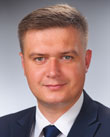
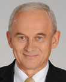
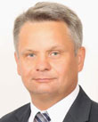
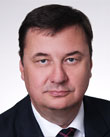
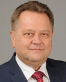

2026-09-24
Projekt wpłynął do Sejmu Druk nr 3136 ↗
w-senacieustawaStanowisko Senatu (2026-10-27)Sejm 10/3136
| Proces | Sejm kadencja 10, nr 3136 |
|---|---|
| Wpłynął | 2026-09-24 |
| Ostatnia zmiana źródła | 2026-10-28 |
| RCL | legislacja.rcl.gov.pl ↗ |
| Źródło | api.sejm.gov.pl ↗ |
785 zdarzeń



| Klub | Za | Przeciw | Wstrz. | Nieobec. |
|---|---|---|---|---|
| KO | 1 | 151 | 0 | 4 |
| P. Adamowicz U. Augustyn S. Bielawska P. Bliźniuk M. Bochenek K. Bojarski P. Borys M. Bosacki M. Chmielewski A. Chybicka J. Cichoń Z. Czernow B. Dolniak A. Domański R. Dowhan M. Filiks J. Frydrych K. Frysztak P. Gabriel K. Gadowski A. Gajewska K. Gajewska E. Gapińska Z. Gawlik E. Gelert A. Gierada R. Giertych W. Giziński M. Golbik S. Gorczyca K. Grabczuk J. Grabiec M. Gromadzka B. Grygorcewicz M. Gzik T. Głogowski P. Głowski K. Habura A. Hanajczyk I. Hartwich M. Hok Ł. Horbatowski K. Jachira R. Jagła M. Janyska M. Jaros P. Jaskulski D. Jazłowiecka D. Jaśkowiec P. Kandyba J. Karnowski I. Karolewska K. Kierzek-Koperska J. Kluzik-Rostkowska Z. Konwiński T. Kostuś U. Koszutska A. Kot P. Kowal I. Kozłowska E. Kołodziej M. Kołodziejczak M. Kołodziejczak M. Koźlakiewicz I. Krawczyk M. Krawczyk R. Kropiwnicki A. Krzemiński H. Krzywonos-Strycharska M. Krząkała W. Król K. Królak P. Lachowicz S. Lamczyk M. Lasek G. Lenartowicz I. Leszczyna B. Lisowska K. Lubnauer A. Marchewka D. Marek P. Masełko K. Matusik-Lipiec J. Meysztowicz K. Mieszkowski C. Mroczek A. Myrcha G. Napieralski D. Niedziela J. Niedźwiedzki M. Niemczyk J. Niezgodzka S. Nitras B. Nowacka T. Nowak M. Okła-Drewnowicz P. Olszewski K. Osos P. Papke K. Pawliczak K. Piekarska L. Pietrzczyk K. Piątkowski K. Plocke E. Polak A. Pomaska M. Popielarz M. Pępek R. Rak M. Roguska M. Rosa J. Rutnicki M. Rząsa K. Sibińska R. Siemaszko T. Siemoniak K. Skowrońska W. Smarduch A. Sobolak M. Sowa K. Stachowicz F. Sterczewski P. Suski A. Szewiński H. Szopiński K. Szumilas T. Szymański A. Szłapka W. Sługocki A. Tajner C. Tomczyk M. Tomczykiewicz M. Tracz K. Truskolaski D. Tusk J. Urbaniak A. Uznańska-Wiśniewska R. Wardzała J. Wałęsa M. Wielichowska A. Witczak M. Witczak P. Witek A. Wojciechowska B. Wołoszański M. Wróbel B. Zawieja W. Zembaczyński U. Zielińska A. Łepkowska-Gołaś D. Łoboda M. Łośko A. Łuczak K. Łuczak A. Łącki Ł. Ściebiorowski | ||||
| PiS | 0 | 137 | 0 | 10 |
| A. Adamczyk W. Andzel D. Arciszewska-Mielewczyk I. Arent M. Ast P. Babinetz B. Bartuś R. Bochenek J. Bogucki J. Borowiak K. Bortniczuk B. Borys-Szopa L. Burzyńska M. Błaszczak A. Chojecki K. Choma D. Chorosińska T. Chrzan K. Ciecióra K. Czarnecki W. Czarnecki P. Czarnek A. Czartoryski L. Czechak A. Czerwińska K. Czochara W. Dajczak Z. Dolata B. Dorywalski P. Drabek J. Dziedziczak A. Dąbrowska-Banaszek M. Filipek-Sobczak R. Fogiel A. Gawron G. Gaża A. Gembicka P. Gliński M. Golińska M. Gosek K. Gołojuch M. Grabowski M. Gróbarczyk K. Gwiazdowski A. Górska C. Hoc Z. Hoffmann P. Hreniak M. Jach N. Kaczmarczyk F. Kaczyński J. Kaczyński P. Kaleta S. Kaleta J. Kanthak M. Kałużny A. Kosztowniak H. Kowalczyk M. Kowalski B. Kownacki J. Krajewski L. Krasulski A. Krupka M. Krystian P. Król M. Kuchciński W. Kulpa M. Kurowska W. Kurowski Z. Kuźmiuk E. Leniart J. Lichocka G. Lorek A. Macierewicz E. Malik D. Matecki J. Materna G. Matusiak M. Matuszewski M. Małecki A. Milczanowska D. Milewski J. Mosiński M. Moskal A. Mrówczyński M. Ociepa B. Olbryś J. Osuch A. Paluch T. Pamuła B. Piecha G. Piechowiak A. Pieczarka D. Piontkowski S. Pogoda J. Polaczek P. Polak M. Porzucek K. Płażyński Z. Rau M. Romanowski R. Romanowski U. Rusecka J. Sasin P. Sałek A. Schmidt J. Sellin E. Siarka S. Skwarek K. Smoliński K. Sobolewski A. Soin D. Stefaniuk M. Subocz M. Suski W. Szarama A. Szałabawka J. Szczurek-Żelazko P. Szrot S. Szwed K. Sójka K. Tchórzewski R. Telus P. Uruski M. Warchoł R. Warwas J. Warzecha M. Wassermann R. Weber M. Wesoły P. Wicher J. Wieczorek T. Wilk E. Witek A. Wojciechowska van Heukelom A. Wojtyszek M. Woś G. Woźniak T. Woźniak B. Wróblewski M. Wójcik J. Zieliński T. Zieliński Z. Ziobro S. Łukaszewicz A. Śliwka J. Świat | ||||
| RozwojPlus | 34 | 2 | 1 | 3 |
| A. Baluch R. Bartosik Z. Chmielowiec A. Cicholska J. Cieszyński M. Cieślak E. Duda S. Giżyński R. Gontarz A. Gut-Mostowy M. Gwóźdź M. Horała P. Jabłoński M. Jakubiak F. Kapinos Ł. Kmita M. Koc W. Krajewski A. Kryj K. Kubów A. Kwiecień K. Lipiec M. Machałek G. Macko M. Morawiecki M. Pawłowska G. Puda P. Rychlik Ł. Schreiber O. Semeniuk-Patkowska M. Stachowiak-Różecka K. Szczucki S. Szynkowski vel Sęk R. Terlecki W. Tomaszewski S. Tułajew P. Uściński W. Zubowski I. Zyska A. Ścigaj | ||||
| PSL-TD | 0 | 31 | 0 | 1 |
| W. Bartoszewski P. Bejda M. Biernacki A. Dziedzic A. Grzyb H. Kiepura D. Klimczak W. Kosiniak-Kamysz S. Krajewski A. Kłopotek R. Lubczyk M. Maliszewski U. Nowogórska M. Orliński K. Paszyk U. Pasławska M. Pyrzyk I. Raś J. Rzepa W. Różyński T. Samborski M. Sawicki C. Siekierski H. Smolarz Z. Sosnowski M. Sroka J. Tomczak S. Tomczyszyn P. Zgorzelski Z. Ziejewski J. Zięba-Gzik B. Żelazowska | ||||
| Lewica | 0 | 20 | 0 | 1 |
| B. Borowiec W. Czarzasty J. Czerniak A. Dziemianowicz-Bąk K. Gawkowski D. Gosek-Popiołek K. Kotula P. Kowal A. Kucharska-Dziedzic M. Kulasek W. Nowicka D. Olko A. Sikora W. Szczepański A. Szejna T. Tomaszewski T. Trela K. Ueberhan J. Wicha D. Wieczorek A. Żukowska | ||||
| Konfederacja | 15 | 0 | 0 | 1 |
| K. Berkowicz K. Bosak K. Bosak B. Foltyn S. Mentzen K. Mulawa B. Pejo M. Połuboczek G. Płaczek K. Szymański K. Tuduj W. Tumanowicz M. Wawer R. Wilk P. Wipler A. Zapałowski | ||||
| Centrum | 0 | 15 | 0 | 0 |
| I. Bodnar E. Burkiewicz Ż. Cwalina-Śliwowska P. Hennig-Kloska R. Kasprzyk R. Komarewicz A. Leo B. Okuła B. Oliwiecka R. Petru N. Pietrykowski M. Skonieczka M. Suchoń E. Szymanowska S. Ćwik | ||||
| Polska2050 | 0 | 14 | 0 | 1 |
| A. Buczyńska A. Gomoła M. Gramatyka P. Górnikiewicz B. Hołownia S. Hołownia A. Luboński M. Nowak Ł. Osmalak B. Romowicz E. Schädler P. Strach W. Tomczak K. Wnuk P. Śliz | ||||
| niez. | 1 | 6 | 0 | 0 |
| M. Józefaciuk J. Kowalski P. Matysiak Ł. Mejza J. Mucha P. Zalewski T. Zimoch | ||||
| Demokracja | 3 | 0 | 0 | 1 |
| J. Ardanowski P. Kukiz T. Rzymkowski J. Sachajko | ||||
| Razem | 0 | 4 | 0 | 0 |
| M. Konieczny M. Stożek A. Zandberg M. Zawisza | ||||
| Konfederacja_KP | 3 | 0 | 0 | 0 |
| R. Fritz W. Skalik S. Zawiślak | ||||
10. kadencja, 67. posiedzenie, 2. dzień - Poseł Sprawozdawca Dorota Marek 10. kadencja, 67. posiedzenie, 2. dzień (21-10-2026) 21. punkt porządku dziennego: Sprawozdanie Komisji Finansów Publicznych o rządowym projekcie ustawy o zmianie ustawy o podatku akcyzowym oraz ustawy o świadczeniach opieki zdrowotnej finansowanych ze środków publicznych (druki nr 3136 i 3250). Poseł Sprawozdawca Dorota Marek: Szanowna Pani Marszałek! Panie Ministrze! Wysoki Sejmie! W imieniu Komisji Finansów Publicznych mam zaszczyt przedstawić sprawozdanie o rządowym projekcie ustawy o zmianie ustawy o podatku akcyzowym oraz ustawy o świadczeniach opieki zdrowotnej finansowanych ze środków publicznych. Komisja Finansów Publicznych na posiedzeniu w dniu 21 października 2026 r. rozpatrzyła powyższy projekt ustawy. W wyniku przeprowadzonej dyskusji komisja przyjęła jedną poprawkę o charakterze doprecyzowującym. Przedłożony projekt ustawy dotyczy aktualizacji tzw. akcyzowej mapy drogowej w zakresie stawek podatku akcyzowego na napoje alkoholowe na rok 2027. Konieczność wprowadzenia regulacji wynika z faktu, że dotychczasowe tempo wzrostu akcyzy nie nadążało za skumulowaną inflacją oraz realnym wzrostem wynagrodzeń, co prowadzi do wzrostu dostępności cenowej alkoholu. W projekcie ustawy zakłada się podwyższenie stawek akcyzy m.in. na alkohol etylowy, piwo, wino, napoje fermentowane i wyroby pośrednie, co ma na celu ograniczenie spożycia używek oraz redukcję negatywnych skutków zdrowotnych i społecznych. Nowe przepisy wprowadzają również mechanizm bezpośredniego zasilania systemu ochrony zdrowia. Nadwyżka wpływów z akcyzy od napojów alkoholowych w stosunku do roku bazowego 2026 znajdzie się w budżecie Narodowego Funduszu Zdrowia w formie zwiększenia dotacji podmiotowej. Ustawa ma wejść w życie z dniem 1 stycznia 2027 r., a w latach 2027 i 2028 dotacja dla NFZ zostanie dodatkowo zwiększona o stałą kwotę 1,4 mld zł rocznie. Wysoki Sejmie! W imieniu komisji wnoszę o przyjęcie przedłożonego projektu ustawy wraz z przyjętą poprawką. Dziękuję. (Oklaski) Przebieg posiedzenia
10. kadencja, 67. posiedzenie, 2. dzień - Poseł Magdalena Łośko 10. kadencja, 67. posiedzenie, 2. dzień (21-10-2026) 21. punkt porządku dziennego: Sprawozdanie Komisji Finansów Publicznych o rządowym projekcie ustawy o zmianie ustawy o podatku akcyzowym oraz ustawy o świadczeniach opieki zdrowotnej finansowanych ze środków publicznych (druki nr 3136 i 3250). Poseł Magdalena Łośko: Szanowna Pani Marszałek! Wysoka Izbo! W imieniu klubu Koalicji Obywatelskiej mam zaszczyt przedstawić stanowisko wobec rządowego projektu ustawy o zmianie ustawy o podatku akcyzowym oraz ustawy o świadczeniach opieki zdrowotnej finansowanych ze środków publicznych, druk nr 3250. Celem ustawy jest przede wszystkim przywrócenie pierwotnego znaczenia akcyzowej mapy drogowej, której zadaniem od początku było ograniczenie dostępności ekonomicznej alkoholu oraz przeciwdziałanie negatywnym skutkom jego nadmiernego spożywania. Wprowadzona w 2022 r. mapa drogowa zakładała wzrost stawek akcyzy o 10% w pierwszym roku oraz o 5% w kolejnych latach. Założenia te powstawały w warunkach gospodarczych, które istotnie różniły się od obecnych. Dlatego projektowana ustawa wprowadza stawki akcyzy na napoje alkoholowe większe o 15% względem stawek przewidzianych obecnie na 2027 r. Ustawowe stawki akcyzy nie były waloryzowane wraz ze zmianami siły nabywczej pieniądza i wynagrodzeń. W efekcie alkohol stał się dużo bardziej dostępny dla konsumentów. Relacja ceny alkoholu do dochodów konsumentów ma kluczowe znaczenie dla oceny jego dostępności ekonomicznej. Aktualizacja stawek jest więc odpowiedzią na zmianę realiów gospodarczych, a nie odejściem od wcześniej przyjętej polityki. Spożywanie alkoholu generuje koszty nie tylko dla osób pijących, lecz także dla całego systemu ochrony zdrowia i państwa. To są koszty leczenia chorób związanych z alkoholem, wypadków, przemocy, uzależnień, absencji zawodowej czy innych konsekwencji społecznych. Szanowni Państwo! Ustawa wprowadza najważniejszą zmianę, przewiduje się zwiększenie dotacji podmiotowej dla Narodowego Funduszu Zdrowia. W okresie od 2027 r. do 2028 r. zakłada się zwiększenie dotacji o 1,4 mld zł rocznie. Dodatkowo środki mają zostać przeznaczone na finansowanie świadczeń zdrowotnych, w tym leczenie skutków spożywania alkoholu. Jeżeli społeczeństwo ponosi koszty zdrowotne związane z konsumpcją alkoholu, dodatkowe wpływy powinny w możliwie bezpośredni sposób wspierać system, który te skutki leczy. Zgodnie z danymi Eurostatu ceny napojów alkoholowych w Polsce należą do najniższych w Unii Europejskiej, niższe są jedynie w Bułgarii, Rumunii i na Węgrzech. Wyższa cena ma ograniczyć popyt, a tym samym wielkość sprzedaży. To jest jeden z zamierzonych efektów polityki ograniczania ekonomicznej dostępności alkoholu. W przypadku alkoholu państwo nie ma do czynienia ze zwykłym dobrem konsumpcyjnym. Jest to produkt, którego nadmierne spożywanie powoduje mierzalne koszty zdrowotne i społeczne. Polityka państwa może więc wykorzystywać instrumenty cenowe zarówno do ograniczania konsumpcji, jak i do częściowego finansowania kosztów, które ta konsumpcja generuje. Projektowana zmiana wpisuje się w dwa równoległe cele państwa: ograniczanie negatywnych skutków zdrowotnych spożywania alkoholu oraz zapewnienie dodatkowych środków dla systemu ochrony zdrowia. Jest to szczególnie istotne w sytuacji rosnących kosztów funkcjonowania ochrony zdrowia. W związku z powyższym zwracam się do Wysokiej Izby o przyjęcie projektu ustawy. Jednocześnie pragnę złożyć na ręce pani marszałek poprawkę, która polegać będzie na utrzymaniu preferencyjnej stawki podatku akcyzowego na cydr i perry o zawartości o alkoholu nieprzekraczającej 5% objętości. Dziękuję bardzo. (Oklaski) Przebieg posiedzenia
10. kadencja, 67. posiedzenie, 2. dzień - Poseł Henryk Kowalczyk 10. kadencja, 67. posiedzenie, 2. dzień (21-10-2026) 21. punkt porządku dziennego: Sprawozdanie Komisji Finansów Publicznych o rządowym projekcie ustawy o zmianie ustawy o podatku akcyzowym oraz ustawy o świadczeniach opieki zdrowotnej finansowanych ze środków publicznych (druki nr 3136 i 3250). Poseł Henryk Kowalczyk: Pani Marszałek! Wysoka Izbo! W imieniu Klubu Parlamentarnego Prawo i Sprawiedliwość mam zaszczyt przedstawić stanowisko wobec rządowego projektu ustawy o zmianie ustawy o podatku akcyzowym oraz ustawy o świadczeniach opieki zdrowotnej. Pierwotny druk to druk nr 3136, sprawozdanie komisji to druk nr 3250. Projekt dotyczy podwyżki akcyzy na alkohol i - co bardzo ważne, bo już taki projekt był, teraz to jest dopisane - przeznaczenia przychodów z tego tytułu wprost na Narodowy Fundusz Zdrowia. W latach 2027 i 2028 będą to kwoty z góry zakładane: 1400 mln zł. Później będzie to różnica w potencjalnych przychodach z 2026 r. i aktualnych przychodach, które będą większe od przychodów z 2026 r. W uzasadnieniu czytamy, że ma to być też forma ograniczenia dostępności alkoholu. Faktycznie jest tak, że spożywanie alkoholu zależy od wielu czynników. Problem reklamy, można powiedzieć, rozwiązaliśmy, jeszcze nie do końca, ale już prawie, że tak powiem. Problem ograniczenia dostępności fizycznej, czyli choćby ograniczenia sprzedaży w godzinach nocnych, również został rozwiązany. Oczywiście można jeszcze dalej dyskutować o ograniczeniu dostępności fizycznej, np. poprzez ograniczenie czy określenie limitu ilości punktów sprzedaży alkoholu w stosunku do liczby mieszkańców, bo ona jest w tej chwili ogromna, jeśli chodzi o Polskę. Np. ustawa tzw. antyalkoholowa z 1920 r. zakładała, że powinien być jeden punkt sprzedaży alkoholu na co najmniej 2,5 tys. mieszkańców. Nam niestety jeszcze jest daleko do tego, bo jeden punkt sprzedaży alkoholu jest mniej więcej na 250 mieszkańców, a więc te punkty są 10 razy gęściej, niż przewidywali to twórcy niepodległości w 1920 r. Może dlatego wtedy spożycie alkoholu było na poziomie rzędu 2 l czystego alkoholu na głowę, a teraz mamy ponad 10 l, z tendencją obecnie lekko spadającą. Kolejnym uzasadnieniem, zresztą bardzo słusznym, jest ograniczenie dostępności ekonomicznej alkoholu. To jest właściwie sedno tej ustawy, czyli podniesienie cen po to, żeby ta dostępność ekonomiczna była realna, niezaniżona. Jak spojrzałem na ceny i na minimalne wynagrodzenie, to okazało się, że jak to porównamy do 2016 r., to teraz za płacę minimalną można kupić dwa razy więcej alkoholu. A więc widać, że ta dostępność ekonomiczna się totalnie rozjechała. Podwyżki, które są teraz proponowane... W 2022 r. rząd Prawa i Sprawiedliwości wprowadził podwyżkę akcyzy i wprowadził mapę drogową podwyżki akcyzy o 5% w ciągu roku, ale nadal to nie spowodowało praktycznie żadnej zmiany. Biorąc pod uwagę wzrost wynagrodzeń, który jest większy, i do tego inflację, właściwie nic się nie zmieniało. Teraz jest propozycja odrobinę większej podwyżki akcyzy. Podkreślam: nie jest to rzecz duża i pewnie wielkiego przełomu nie spowoduje, bo z powodu tej akcyzy pół litra wódki 40-procentowej zdrożeje o niespełna 4 zł, a piwo półlitrowe o ok. 20 gr. A więc pewnie nie będzie bardzo widocznego przełomu. Ale kierunek jest dobry. Ja bym życzył, żeby sprzedaż alkoholu mocno spadła i nawet żeby te kwoty się nie ziściły całkowicie, czyli przychód ze wzrostu akcyzy. Bo nawet jeśli tak będzie, to i tak musimy zawsze pamiętać o tym, o czym mówią fachowcy: że każda złotówka pochodząca ze sprzedaży alkoholu generuje 3-4 zł kosztów spowodowanych skutkami picia alkoholu. To są wyliczenia eksperckie. Wobec tego nawet jeśli przychody z akcyzy (Dzwonek) zaczną spadać, ale będzie mniejsza sprzedaż alkoholu, to w innych miejscach i tak będą wielokrotnie większe oszczędności. Dlatego też Prawo i Sprawiedliwość będzie głosować za tą ustawą. Dziękuję bardzo. (Oklaski) Przebieg posiedzenia
10. kadencja, 67. posiedzenie, 2. dzień - Poseł Fryderyk Sylwester Kapinos 10. kadencja, 67. posiedzenie, 2. dzień (21-10-2026) 21. punkt porządku dziennego: Sprawozdanie Komisji Finansów Publicznych o rządowym projekcie ustawy o zmianie ustawy o podatku akcyzowym oraz ustawy o świadczeniach opieki zdrowotnej finansowanych ze środków publicznych (druki nr 3136 i 3250). Poseł Fryderyk Sylwester Kapinos: Szanowny Panie Marszałku! Wysoka Izbo! Szanowni Państwo! W imieniu Klubu Parlamentarnego Rozwój Plus chcę jasno powiedzieć: Rozumiemy potrzeby prowadzenia odpowiedzialnej polityki fiskalnej i dbania o dochody budżetu państwa. Nie możemy jednak zgodzić się na rozwiązania, które poprzez kolejne podwyżki akcyzy mogą wypchnąć część legalnego rynku do szarej strefy i uderzyć w przedsiębiorców działających zgodnie z prawem. W ostatnich latach obserwowany jest znaczący spadek konsumpcji alkoholu. Pojawia się jednak pytanie, jaka część odnotowanego spadku wynika z rzeczywistej rezygnacji z alkoholu, a jaka z tego, że rosnąca od kilku lat akcyza skutkuje zwiększeniem zainteresowania konsumentów zakupami w szarej strefie. Dane są bardzo niepokojące. Według szacunków Instytutu Prognoz i Analiz Gospodarczych wolumen szarej strefy na rynku alkoholu wyniósł w 2025 r. ok. 23 mln l alkoholu 100-procentowego, a wartość potencjalnych utraconych wpływów to ok. 1,8 mld zł. Te pieniądze powinny trafić do Skarbu Państwa, a pozostały poza systemem. Czy zatem właściwą drogą jest dalsze skokowe podnoszenie podatku, czy może powinniśmy przede wszystkim skuteczniej walczyć z nielegalnym obrotem i alkoholem niewiadomego pochodzenia? Szanowni Państwo! Jeżeli rzeczywiście chcemy ograniczać negatywne skutki społeczne i zdrowotne nadużywania alkoholu, to musimy odpowiedzieć na pytanie, czy skokowa podwyżka ceny legalnego alkoholu jest faktycznie skutecznym narzędziem. Tutaj pojawia się kolejne pytanie: Czy proponowana podwyżka akcyzy jest rzeczywiście elementem długofalowej polityki zdrowotnej, czy przede wszystkim próbą zwiększenia dochodów budżetu państwa? Jeżeli jest to polityka zdrowotna, to oczekujemy przedstawienia konkretnych analiz pokazujących jej przewidywany wpływ na konsumpcję, szarą strefę i koszty społeczne. Jeżeli natomiast głównym celem są dochody budżetowe, to powiedzmy to uczciwie. Przy tym jednak także oczekujemy rzetelnej analizy wpływu podwyżki na rynek. Oczekujemy kalkulacji dotyczącej spodziewanych fiskalnych efektów tak dużej podwyżki akcyzy, skoro podniesienie jej w bieżącym roku o kolejne 5% przynosi spadki przychodów. Wysoka Izbo! W 2021 r. wprowadzono akcyzową mapę drogową, która miała zapewnić przedsiębiorcom przewidywalność prowadzenia działalności. Przedsiębiorcy podejmowali decyzje inwestycyjne, zawierali umowy, kupowali maszyny, rozwijali produkcję i zatrudnienie w oparciu o określone przez państwo zasady. Nie powinno się zmieniać reguł gry w trakcie trwania umowy. Państwo musi być przewidywalnym partnerem. Jeżeli ustanawiamy wieloletnią mapę drogową, to przedsiębiorcy mają prawo oczekiwać stabilności. Tym bardziej niezrozumiały jest sposób potraktowania cydru i perry o zawartości alkoholu do 5%. Ta kategoria zgodnie z wcześniejszymi założeniami miała być wyłączona z podwyżek do 2027 r. Tymczasem dla cydru i perry proponowana podwyżka jest największa i sięga ponad 26%. Dlaczego właśnie cydr i perry mają zostać tak restrykcyjnie potraktowane? To niszowa, niskoalkoholowa kategoria. Jakie będą fiskalne i zdrowotne skutki obciążenia cydrów największą podwyżką? Można się spodziewać, że znikome, śladowe. Czy zostały one zestawione z konsekwencjami dla producentów tych produktów? Dlaczego nie tworzycie warunków, aby z polskiego jabłka, którego mamy tak wiele - jesteśmy nawet liderem produkcji jabłek w Europie, a chyba trzecie miejsce mamy na świecie - powstał polski produkt o wyższej wartości dodanej, który z sukcesem mógłby być eksportowany. Musi on mieć jednak stabilne warunki w Polsce. Przecież w wielu krajach akcyza na cy
10. kadencja, 67. posiedzenie, 2. dzień - Poseł Mirosław Adam Orliński 10. kadencja, 67. posiedzenie, 2. dzień (21-10-2026) 21. punkt porządku dziennego: Sprawozdanie Komisji Finansów Publicznych o rządowym projekcie ustawy o zmianie ustawy o podatku akcyzowym oraz ustawy o świadczeniach opieki zdrowotnej finansowanych ze środków publicznych (druki nr 3136 i 3250). Poseł Mirosław Adam Orliński: Szanowny Panie Marszałku! Panie Ministrze! Wysoka Izbo! Szanowni Państwo! W imieniu Klubu Parlamentarnego Polskie Stronnictwo Ludowe przedstawię nasze stanowisko odnośnie do rządowego projektu. Rzeczywiście projekt dotyczy podwyżek stawek akcyzy w 2027 r. Tak jak już było powiedziane, ten projekt jest zresztą analogiczny i bardzo podobny do tego projektu, który rok temu przyjmowaliśmy w tej Izbie. Tutaj też była dyskusja nad nim. Tamten projekt nie uzyskał aprobaty pana prezydenta ani jego podpisu. Wydaje nam się, że zmiana i zapis, że wpływy z akcyzy zostaną przeznaczone na zwiększenie finansowania Narodowego Funduszu Zdrowia, będą argumentem, który pozwoli jednoznacznie pokazać, że wpływy z tych dochodów wprost poprawią sytuację w ochronie zdrowia i dofinansują Narodowy Fundusz Zdrowia. Rzeczywiście przełoży się to na to, o czym tutaj mówiliśmy, czyli na walkę z problemem alkoholowym. Dane pokazują, że jesteśmy na drugiej pozycji w Unii Europejskiej. Wiele osób właśnie z powodu alkoholu musi po prostu poddać się leczeniu, bo ma różnego rodzaju problemy zdrowotne. Ten projekt, jak myślę, zaktualizuje mapę akcyzową, o której mówimy i w ramach debaty publicznej, i tutaj, w tej Izbie. Wzrost dostępności ekonomicznej napojów alkoholowych jest faktem i on jest powszechnie dostrzegany także w debacie publicznej. Daje się zauważyć, że rzeczywiście te zmiany są tak naprawdę niewielkie, jeśli popatrzymy na skalę. Tak jak mówił pan poseł Kowalczyk, rzeczywiście te kilka złotych, mówiąc kolokwialnie, od butelki wódki nie odstraszą ani jej nie zatrzymają. Na pewno jednak wychodzimy temu naprzeciw i tę mapę aktualizujemy. Jako klub parlamentarny popieramy ten projekt ustawy. Myślę, że dobra jest też poprawka, o której powiedziała pani poseł Łośko i która wychodzi naprzeciw oczekiwaniom związanym z cydrem i z perry. Popieramy ten projekt. Dziękuję. (Oklaski) Przebieg posiedzenia
10. kadencja, 67. posiedzenie, 2. dzień - Poseł Witold Tumanowicz 10. kadencja, 67. posiedzenie, 2. dzień (21-10-2026) 21. punkt porządku dziennego: Sprawozdanie Komisji Finansów Publicznych o rządowym projekcie ustawy o zmianie ustawy o podatku akcyzowym oraz ustawy o świadczeniach opieki zdrowotnej finansowanych ze środków publicznych (druki nr 3136 i 3250). Poseł Witold Tumanowicz: Panie Marszałku! Wysoka Izbo! W 2022 r. państwo przedstawiło przedsiębiorcom tzw. mapę drogową podwyżek akcyzy na alkohol. Miała ona zapewnić przewidywalność podatkową, a stawki miały rosnąć o 5% rocznie. Teraz rząd odchodzi od tych zasad i proponuje znacznie większą podwyżkę. Akcyza na piwo, wino i alkohol etylowy ma wzrosnąć o blisko 15%. Na cydr i perry - według wciąż obowiązującego druku sejmowego - o ponad 26%. Słyszę, że jest złożona poprawka ze strony partii rządzącej, więc dobrze, że przynajmniej w tym zakresie jest jakaś refleksja. Musimy się z nią jeszcze zapoznać, żeby ją ocenić. Natomiast nie zmienia to ogólnej oceny ustawy. Jak przedsiębiorcy mają planować inwestycje, produkcję i zatrudnienie, skoro nawet zapowiedziany przez państwo harmonogram podatkowy przestaje obowiązywać? Co istotne, w samym uzasadnieniu projektu przyznajecie, że wyższa akcyza może prowadzić do rozwoju szarej strefy i większego niż zakładany spadku legalnej sprzedaży. A przecież to właśnie legalnie działające firmy ponoszą dodatkowe koszty, podczas gdy nielegalny handel może na tym skorzystać. Rząd zapowiada również, że dodatkowe wpływy z akcyzy zostaną przeznaczone na Narodowy Fundusz Zdrowia, ale mechanizm przekazywania ich do NFZ zacznie działać dopiero w 2029 r., a nie od razu po wejściu w życie podwyżki. Konfederacja sprzeciwia się kolejnemu zwiększaniu obciążeń podatkowych i łamaniu wcześniej zapowiedzianych zasad. Dlatego w imieniu klubu Konfederacji składam wniosek o odrzucenie projektu ustawy w całości. Przebieg posiedzenia
10. kadencja, 67. posiedzenie, 2. dzień - Poseł Marcin Skonieczka 10. kadencja, 67. posiedzenie, 2. dzień (21-10-2026) 21. punkt porządku dziennego: Sprawozdanie Komisji Finansów Publicznych o rządowym projekcie ustawy o zmianie ustawy o podatku akcyzowym oraz ustawy o świadczeniach opieki zdrowotnej finansowanych ze środków publicznych (druki nr 3136 i 3250). Poseł Marcin Skonieczka: Szanowny Panie Marszałku! Panie Ministrze! Wysoka Izbo! Mam zaszczyt przedstawić stanowisko Klubu Parlamentarnego Centrum wobec rządowego projektu ustawy o zmianie ustawy o podatku akcyzowym oraz ustawy o świadczeniach opieki zdrowotnej finansowanych ze środków publicznych, zawartego w druku sejmowym nr 3136. Projekt, który dziś rozpatrujemy, dotyczy dwóch ważnych spraw: po pierwsze, ograniczenia szkodliwego spożycia alkoholu, a po drugie, zwiększenia środków na ochronę zdrowia. Co konkretnie się zmienia? W projekcie przewiduje się od 1 stycznia 2027 r. podwyższenie akcyzy na napoje alkoholowe z 5 do 20%, czyli o 15 punktów procentowych względem stawek przewidzianych w obowiązujących przepisach. Zmiana obejmie zarówno alkohol wysokoprocentowy, jak i wino czy piwo. W praktyce oznacza to, że 1,5-litrowa butelka wódki może podrożeć o ok. 4 zł, butelka piwa o kilkanaście groszy, a butelka wina o kilkadziesiąt groszy. Czyli piwo podrożeje o kilkanaście groszy, a wino o kilkadziesiąt groszy. Widzicie więc państwo, że z punktu widzenia wzrostów wynagrodzeń to są kwoty niewielkie. Przypomnę, że w przyszłym roku minimalna pensja wzrośnie o 100 zł, więc jeśli przeliczyć to na liczbę butelek, które będzie można kupić za tę kwotę, to okazuje się, że za podwyżkę pensji minimalnej będzie można kupić 25 butelek wódki. Więc myślę, że ten wzrost dotknie niewiele Polek i Polaków, a pomoże służbie zdrowia, ochronie zdrowia. Tak jak powiedziałem, te pieniądze mają być przeznaczone właśnie na dodatkowe finansowanie Narodowego Funduszu Zdrowia. Jak zsumujemy te niewielkie kwoty, to wyjdzie znaczna ilość pieniędzy, bo ustawa przewiduje wpływy w wysokości 1,4 mld zł w latach 2027 i 2028. To są już znaczące środki, które będą przeznaczone na te cele. One będą finansowały leczenie pacjentów, w tym osób cierpiących z powodu skutków spożywania alkoholu. Szanowni Państwo! Wysoka Izbo! Rozmawiając o akcyzie, nie możemy pomijać rzeczywistych skutków picia alkoholu. To alkohol przyczynia się do rozwoju nowotworów, chorób wątroby, układu krążenia, prowadzi do uzależnień, rozpadu rodziny, przemocy domowej, a również wypadków drogowych. Za te skutki płacą nie tylko osoby pijące, ale płacimy my wszyscy. Według szacunków Państwowej Agencji Rozwiązywania Problemów Alkoholowych koszty społeczne i ekonomiczne spożywania alkoholu w Polsce wyniosły ponad 93 mld zł w 2020 r. Jest to kwota astronomiczna. Tymczasem wpływy z akcyzy na alkohol w tym samym roku wyniosły zaledwie 13 mld zł. Tak więc to jest ta różnica, o której mówiłem, do której dopłacamy. Rachunek jest więc prosty. Społeczeństwo ponosi znacznie większe koszty niż państwo uzyskuje z opodatkowania alkoholu. Dlatego uzasadnione jest pytanie, czy dotychczasowa mapa drogowa przewidująca coroczne podwyżki akcyzy o ok. 5% nadal wystarcza. Jeśli chodzi o Klub Parlamentarny Centrum, uważamy, że nie. Uzasadnieniem jest też wykres, który pokazuje, jak rosła realna siła nabywcza Polek i Polaków w wyniku wzrostu wynagrodzeń. Efekt jest taki, że Polacy za te same pieniądze mogą kupować coraz więcej alkoholu. A my uważamy, że to nie jest dobry kierunek, ponieważ, tak jak powiedziałem, wynagrodzenia rosły szybciej niż cena alkoholu. W efekcie alkohol staje się relatywnie bardziej dostępny i 5-procentowa podwyżka nie ogranicza skutecznie jego dostępności. Wyższa akcyza jest więc uzasadniona nie tylko potrzebami budżetowymi, ale przede wszystkim troską o zdrowie publiczne. Oczywiście nie zastępuje to profilaktyki, edukacji ani leczenia uzależnień, może jednak stanowić ważny element odpowiedzialnej polityki państwa. Chcę również przy
10. kadencja, 67. posiedzenie, 2. dzień - Poseł Ryszard Wilk 10. kadencja, 67. posiedzenie, 2. dzień (21-10-2026) 21. punkt porządku dziennego: Sprawozdanie Komisji Finansów Publicznych o rządowym projekcie ustawy o zmianie ustawy o podatku akcyzowym oraz ustawy o świadczeniach opieki zdrowotnej finansowanych ze środków publicznych (druki nr 3136 i 3250). Poseł Ryszard Wilk: Challenge accepted. Szanowny Panie Marszałku! Panie Ministrze! Panie i Panowie Posłowie! Czołem, Frysztak! To jest ósma z rzędu ustawa, która podnosi Polakom podatki. Mieliśmy najpierw podwyżkę podatków różnych, rozmaitych, pod hasłem uszczelnienia systemu, przed chwilą tylko mieliśmy podniesienie VAT-u na napoje bezalkoholowe, a teraz mamy podwyżkę akcyzy i jest to pod hasłem ratowania Narodowego Funduszu Zdrowia. Szanowni Państwo! Ja na tę ustawę patrzę z dwóch perspektyw. Po pierwsze, jako poseł, a po drugie, jako osoba, która jest dotknięta pewną wadą fabryczną, o której wszyscy państwo wiecie. Sens tej ustawy oddaje jeden bardzo brutalny, ten z czarnego humoru, dowcip. Przychodzi syn do ojca i mówi: Tato, mówią w telewizji, że akcyza na alkohol rośnie, to znaczy, że będziesz mniej pił? Nie, to znaczy, że będziesz mniej jadł. To jest bardzo brutalne, ale to jest prawdziwe, bo jedyne co w tej ustawie się sprawdzi prawdopodobnie, to są wpływy do budżetu. 1,4 mln do NFZ-etu, 400 tys. do rządu. Mówicie tutaj państwo o dostępności ekonomicznej. Czy naprawdę ktoś z was wierzy, że osoby, które lubią sobie wypić, jak zobaczą, że czteropak jest 3 zł albo 4 zł droższy albo butelka wódki jest 5 zł droższa, to że on wtedy powie: o nie, jak jest po 37 zł, to ja nie kupię? Oczywiście, że kupi. Czyli te koszty ekonomiczne tak naprawdę nie spadają na samego zainteresowanego. Spadają na jego otoczenie. Taka jest brutalna prawda i tutaj musielibyśmy tą akcyzę podnieść tak, żeby butelka kosztowała 300 zł, żeby ktoś się zastanowił. A osób uzależnionych, których mamy w kraju milion, cena w ogóle nie obchodzi. Obchodzi je zawartość, a nie cena. Podwyżka akcyzy paradoksalnie tak samo nie uderzy w nich, tylko uderzy w ich rodziny. Kolejny problem, który może się pojawić, i o nim już wspomniano, to jest to, że im bardziej zwiększamy różnicę pomiędzy ceną legalnego alkoholu a produkcją nielegalnego, tym większa zachęta do omijania systemu. Mianowicie, że ludzie sobie zaczynają pędzić bimber. Mieliśmy taki przykład. W 2002 r. za rządów Leszka Millera, wpływy z akcyzy od alkoholu drastycznie spadały. I co zrobiono? Obniżono akcyzę o 30%. Jakie były tego efekty? Uwaga: wpływy do budżetu z podatku akcyzowego od sprzedaży alkoholu wzrosły. Jak to się stało? Ano bardzo prosto, to jest krzywa Laffera. Akcyzą podbito cenę tak wysoko, że ludzie zaczęli produkować u siebie w garażu. A w momencie, jak cenę obniżono, to ludzie sobie przekalkulowali, że szkoda się babrać z tymi zacierami, rurkami, gazem itd., i zaczęli sobie kupować w sklepie. A teraz idziemy w odwrotną stronę. Szanowni Państwo! Ta ustawa na pewno przyniesie wpływy do budżetu, ale jeżeli ktoś tutaj mówi o jakichś czynnikach zdrowotnych, walce z alkoholizmem, to nie sądzę, że to tutaj pomoże. Jeżeli ktoś faktycznie ma na uwadze szkody ekonomiczne, które niewątpliwie są wyrządzane przez osoby dotknięte alkoholizmem czy nadużywają alkoholu, to nie tędy droga. Trzeba bardziej odkryć tabu, które jest związane z alkoholizmem. Trzeba nazywać rzeczy po imieniu i mówić ludziom, że choroby alkoholowej nie da się cofnąć, ale da się ją zatrzymać. I życzę tego każdemu, kto jest nią dotknięty. Dziękuję. (Oklaski) Przebieg posiedzenia
10. kadencja, 67. posiedzenie, 2. dzień - Poseł Jarosław Sachajko 10. kadencja, 67. posiedzenie, 2. dzień (21-10-2026) 21. punkt porządku dziennego: Sprawozdanie Komisji Finansów Publicznych o rządowym projekcie ustawy o zmianie ustawy o podatku akcyzowym oraz ustawy o świadczeniach opieki zdrowotnej finansowanych ze środków publicznych (druki nr 3136 i 3250). Poseł Jarosław Sachajko: Panie Marszałku! Wysoka Izbo! Pierwszy raz w tej Izbie nie zgodzę się z kolegą posłem Wilkiem. Krzywa Laffera rzeczywiście tak działa, tylko krzywa Laffera nie ma wzoru. Trzeba jej próbować, bo ona dla każdego produktu jest inna, to raz. A dwa: ma pan badania nie tylko polskie, ale i WHO, i wiele innych na całym świecie, związane z tym, że jednak przez kieszeń do serca mężczyzny i przez kieszeń również wpływa się na dostępność alkoholu. Ta ekonomiczna dostępność alkoholu również działa. Ja tę ustawę będę krytykował nie dlatego, że podnoszona jest akcyza na alkohol. Alkohol jest substancją psychoaktywną, uzależniającą, jest to narkotyk, który zabija na raty, niszczy zdrowie, rodzinę, prowadzi do tragedii, generuje ogromne koszty. Od lat jestem zwolennikiem takiego opodatkowania alkoholu, aby wpływy z podatków przynajmniej pokrywały koszty leczenia i koszty społeczne, chociaż te koszty społeczne nie bardzo można wycenić. Apelowałem o podniesienie akcyzy na alkohol również do rządu Prawa i Sprawiedliwości. Koszty powinni ponosić producenci, sprzedawcy, a na końcu zawsze konsumenci, którzy używają alkoholu, bo w tym modelu, który mamy obecnie, koszty związane z alkoholem podnoszą wszyscy podatnicy, również ci, którzy w ogóle nie piją, o czym zresztą mówił pan minister Kowalczyk. Po raz kolejny jednak wrzucacie do jednego worka międzynarodowe koncerny produkujące gigantyczne ilości alkoholu, co im się zawsze będzie opłacało, nawet przy tej podwyższonej stawce akcyzy, i małe, lokalne winiarnie i producentów cydru i perry. To są zupełnie dwie różne produkcje, zupełnie dwa różne koszty. Z jednej strony mamy masową produkcję, która ma gigantyczne pieniądze na reklamę i ogromną skalę sprzedaży. Z drugiej strony - polskich sadowników, niewielkie winnice, niewielkie gospodarstwa rodzinne, które z naszych jabłek, gruszek i winogron wytwarzają lokalne produkty. Te rzemieślnicze trunki, które nie są tanie z powodu samych kosztów produkcji, przeznaczone są do degustacji, a nie do upijania się masowego. Dlatego małe, niezależne winiarnie, producenci cydru i perry powinni korzystać z preferencji. Tu dziękuję za poprawkę złożoną przez Platformę, przepraszam, obecnie Koalicję Obywatelską. Nie możemy traktować rodzinnych winnic tak samo jak koncernów, które produkują miliony litrów, hektolitry alkoholu podobnego do piwa. To taki dowcip - jak ktoś będzie chciał sobie znaleźć. (Dzwonek) Wysoka Izbo! Jeżeli naprawdę nam zależy na ograniczeniu skutków picia alkoholu, kierujmy tę politykę do dużych producentów, a nie do małych, lokalnych producentów. Dziękuję. (Oklaski) (Głos z sali: Brawo!) Przebieg posiedzenia
10. kadencja, 67. posiedzenie, 2. dzień - Poseł Wioleta Tomczak 10. kadencja, 67. posiedzenie, 2. dzień (21-10-2026) 21. punkt porządku dziennego: Sprawozdanie Komisji Finansów Publicznych o rządowym projekcie ustawy o zmianie ustawy o podatku akcyzowym oraz ustawy o świadczeniach opieki zdrowotnej finansowanych ze środków publicznych (druki nr 3136 i 3250). Poseł Wioleta Tomczak: Szanowny Panie Marszałku! Panie Ministrze! Wysoka Izbo! Polacy są coraz bardziej świadomi negatywnych skutków nadużywania alkoholu: zdrowotnych, ekonomicznych i społecznych. Domagają się zmian. Te zmiany przegłosowaliśmy chwilę temu w Wysokiej Izbie, sugerując wprowadzenie zakazu reklamy i promocji alkoholu. Te zmiany przegłosowaliśmy także pod kątem ograniczenia fizycznej dostępności alkoholu, czyli wprowadzenia nocnego ograniczenia jego sprzedaży. Ale ograniczenie zarówno fizycznej dostępności jest ważne - żeby ograniczyć nadużywanie alkoholu - jak i ekonomicznej dostępności. I właśnie o to już w 2025 r. zabiegała koalicja 15 października, zgłaszając rządowy projekt ustawy nowelizujący mapę drogową podwyżek akcyzy na alkohol. Wtedy nie został on zaakceptowany przez prezydenta Karola Nawrockiego. My jako Polska 2050, nie czekając na nową propozycję rządu, w lutym tego roku złożyliśmy poselski projekt ustawy, w którym wpisaliśmy najważniejszą kwestię. Czyli nadwyżka z podwyżki akcyzy na alkohol powinna pójść na leczenie i profilaktykę uzależnienia od alkoholu. To też znalazło się w rządowym projekcie ustawy, wpisane literalnie w wysokości 1,4 mld zł. I to jak najbardziej popieramy. Szanowni Państwo! Mamy skumulowaną inflację w latach 2022-2026, która wynosi ok. 43%, podczas gdy skumulowany wzrost stawek akcyzy przewidziany w mapie drogowej miał wynieść 33%. W efekcie alkohol stał się relatywnie bardziej dostępny. W 2022 r. za przeciętne miesięczne wynagrodzenie można było kupić ok. 219 półlitrowych butelek wódki, a rok temu - już 252 butelki. To nie jest więc wyłącznie dyskusja o podatkach i wpływach do budżetu. Cena jest właśnie kluczowym czynnikiem ograniczenia szkód alkoholowych. Żeby w odpowiedniej proporcji do tego tematu podejść, rekomenduje Światowa Organizacja Zdrowia. Jeżeli chcemy skutecznie przeciwdziałać nadmiernemu spożyciu, musimy także zadbać właśnie, by dostępność ekonomiczna nie rosła wraz z wynagrodzeniem. Nigdy dość przypominania o negatywnych skutkach nadużywania alkoholu. To są tysiące przedwczesnych zgonów, choroby, uzależnienia, wypadki drogowe, tragiczne dramaty rodzinne, przemoc domowa, absencje w pracy. Dlatego potrzebujemy zarówno skutecznej profilaktyki, jak i skutecznej prozdrowotnej polityki publicznej. Mimo że ten projekt ustawy był komentowany, omawiany w Komisji Finansów Publicznych, to jak najbardziej z punktu widzenia zdrowia powinniśmy do niego także podchodzić. Przed rokiem mówiłam tu, w Wysokiej Izbie: Polski nie stać na tani alkohol. Podtrzymuję te słowa. Dlatego Klub Parlamentarny Polska 2050 zagłosuje za przyjęciem projektu ustawy o zmianie ustawy o podatku akcyzowym oraz ustawy o świadczeniach opieki zdrowotnej finansowanych ze środków publicznych. Dziękuję bardzo. (Oklaski) Przebieg posiedzenia
10. kadencja, 67. posiedzenie, 2. dzień - Poseł Witold Tumanowicz 10. kadencja, 67. posiedzenie, 2. dzień (21-10-2026) 21. punkt porządku dziennego: Sprawozdanie Komisji Finansów Publicznych o rządowym projekcie ustawy o zmianie ustawy o podatku akcyzowym oraz ustawy o świadczeniach opieki zdrowotnej finansowanych ze środków publicznych (druki nr 3136 i 3250). Poseł Witold Tumanowicz: Panie Marszałku! Wysoka Izbo! Panie Ministrze! W ocenie skutków regulacji wskazano, że podwyżka akcyzy może doprowadzić do wzrostu szarej strefy i większego niż prognozowany spadku legalnej sprzedaży alkoholu. Czy ministerstwo oszacowało, jak duży może być wzrost nielegalnego obrotu? Przy jakim spadku legalnej sprzedaży zakładane dodatkowe wpływy podatkowe przestaną być osiągalne? W sumie z ostatniej chwili pytanie jest o to, jak rząd się ustosunkowuje do tej poprawki złożonej przez klub Koalicji Obywatelskiej. Dziękuję bardzo. Przebieg posiedzenia
10. kadencja, 67. posiedzenie, 2. dzień - Poseł Henryk Szopiński 10. kadencja, 67. posiedzenie, 2. dzień (21-10-2026) 21. punkt porządku dziennego: Sprawozdanie Komisji Finansów Publicznych o rządowym projekcie ustawy o zmianie ustawy o podatku akcyzowym oraz ustawy o świadczeniach opieki zdrowotnej finansowanych ze środków publicznych (druki nr 3136 i 3250). Poseł Henryk Szopiński: Panie Marszałku! Wysoka Izbo! Panie Ministrze! Popieram proponowane zmiany zawarte w rządowym projekcie ustawy o zmianie ustawy o podatku akcyzowym oraz ustawy o świadczeniach opieki zdrowotnej finansowanych ze środków publicznych, ponieważ uważam, że ich najważniejszym celem powinno być ograniczenie spożycia alkoholu i związanych z nim szkód zdrowotnych i społecznych. Większe wpływy do budżetu powinny być efektem dodatkowym. Czy w związku z tym rząd gwarantuje, że w 2027 i 2028 r. budżet Narodowego Funduszu Zdrowia zostanie zwiększony o 1,4 mld zł rocznie niezależnie od rzeczywistej wysokości wpływów z akcyzy na alkohol - także wtedy, gdy ustawa przyniesie oczekiwany spadek spożycia, a dochody okażą się niższe od prognoz? Dziękuję bardzo. Przebieg posiedzenia
10. kadencja, 67. posiedzenie, 2. dzień - Poseł Ryszard Wilk 10. kadencja, 67. posiedzenie, 2. dzień (21-10-2026) 21. punkt porządku dziennego: Sprawozdanie Komisji Finansów Publicznych o rządowym projekcie ustawy o zmianie ustawy o podatku akcyzowym oraz ustawy o świadczeniach opieki zdrowotnej finansowanych ze środków publicznych (druki nr 3136 i 3250). Poseł Ryszard Wilk: Panie Ministrze! Mam krótkie pytanie, które jest podobne do tego, które zadał poseł Tumanowicz. Mianowicie: Czy rząd dysponuje jakimiś swoimi szacunkami w kwestii tego, jak duża jest szara strefa alkoholowa? Czy jest jakaś projekcja... Jeżeli akcyza będzie rosnąć tak, jak rośnie w związku z mapą drogową, to czy nie będzie zagrożenia tym, że ta szara strefa nam faktycznie eksploduje? Dziękuję bardzo. Przebieg posiedzenia
10. kadencja, 67. posiedzenie, 2. dzień - Poseł Danuta Jazłowiecka 10. kadencja, 67. posiedzenie, 2. dzień (21-10-2026) 21. punkt porządku dziennego: Sprawozdanie Komisji Finansów Publicznych o rządowym projekcie ustawy o zmianie ustawy o podatku akcyzowym oraz ustawy o świadczeniach opieki zdrowotnej finansowanych ze środków publicznych (druki nr 3136 i 3250). Poseł Danuta Jazłowiecka: Dziękuję, panie marszałku. Panie Marszałku! Panie Ministrze! Wysoka Izbo! Rządowa ustawa przedstawia model o zamkniętym obiegu pieniądza. Przewiduje, że w latach 2027-2028 rocznie na ochronę zdrowia będzie przeznaczane 1,4 mld zł. To pieniądze, które mają wspomóc finansowanie ochrony leczenia skutków spożywania alkoholu. Pośle Wilk... Gdzie jest poseł Wilk? Poszedł już sobie. Celem nie jest tu to, by państwo po prostu więcej zarabiało na alkoholu. Chodzi o to, żeby alkohol był mniej dostępny pod względem cenowym, żeby mniej osób ponosiło zdrowotne i społeczne konsekwencje jego nadużywania, a pieniądze z akcyzy pomagały później leczyć tych, którzy w walce z alkoholizmem pomocy potrzebują. Przykłady z Europy potwierdzają obniżenie spożycia alkoholu właśnie w wyniku zastosowania tej drogi. Panie Ministrze! Czy za przykładem innych krajów, skutecznie walczących z nadużywaniem alkoholu można byłoby przy wykorzystaniu pieniędzy z akcyzy wprowadzić dla młodzieży tzw. paszport wolnego czasu? Jest to młodzieżowa karta rekreacyjna. (Dzwonek) W Islandii np. każde dziecko otrzymuje od państwa coroczne dofinansowanie, w przeliczeniu ok. 2-4 tys. zł, w formie elektronicznej karty. Pieniądze te można wydać wyłącznie na opłacenie zorganizowanych zajęć popołudniowych. Młodzież ma darmowy dostęp do profesjonalnych klubów sportowych: piłka nożna, koszykówka, pływanie, do lekcji muzyki, teatru, sztuk walki czy do kół artystycznych. Dziękuję. Przebieg posiedzenia
10. kadencja, 67. posiedzenie, 2. dzień - Poseł Norbert Jakub Kaczmarczyk 10. kadencja, 67. posiedzenie, 2. dzień (21-10-2026) 21. punkt porządku dziennego: Sprawozdanie Komisji Finansów Publicznych o rządowym projekcie ustawy o zmianie ustawy o podatku akcyzowym oraz ustawy o świadczeniach opieki zdrowotnej finansowanych ze środków publicznych (druki nr 3136 i 3250). Poseł Norbert Jakub Kaczmarczyk: Bardzo dziękuję. Panie Marszałku! Wysoka Izbo! (Poseł Norbert Jakub Kaczmarczyk odtwarza nagranie z telefonu: Po 6 miesiącach terapii nie minęło więcej niż 15 minut, jak kupiłem, wiesz, dwie flaszki i narąbałem się jak szpak. To jest takie silne. To jest takie niemożliwe do przejścia, moim zdaniem. To jest tak straszne. To niszczy, wiesz. Alkoholizm to jest rak duszy. Bez duszy się nie da żyć.) Jak obywatelom zabierzemy więcej pieniędzy z kieszeni, to na pewno poradzą sobie z alkoholizmem i problem zniknie. To jest hipokryzja. Jeżeli rozmawiamy o dziurze budżetowej, to mówmy, że za używki trzeba płacić, a nie mówmy, że chcemy pomagać obywatelom. (Dzwonek) Bo jeżeli chcemy pomagać obywatelom, to stwórzmy dobry, specjalny program do walki z tą chorobą duszy, a nie mówmy tylko o ludziach, którzy mogą sobie pozwolić na to, by nie wypić kolejnego kieliszka. To jest tragiczna debata. Jeżeli mówimy o dziurze budżetowej, to mówmy o dziurze budżetowej, a jeżeli chcemy pomagać ludziom, to pomagajmy ludziom. Wicemarszałek Szymon Hołownia: Dziękuję bardzo, panie pośle. Poseł Norbert Jakub Kaczmarczyk: Nie wyciągajmy pieniędzy z kieszeni obywateli pod pretekstem finansowania ochrony zdrowia. Jeżeli mamy zakazać picia, to zakażmy go całkowicie. Nie bądźmy hipokrytami. (Oklaski) Przebieg posiedzenia
10. kadencja, 67. posiedzenie, 2. dzień - Poseł Michał Kowalski 10. kadencja, 67. posiedzenie, 2. dzień (21-10-2026) 21. punkt porządku dziennego: Sprawozdanie Komisji Finansów Publicznych o rządowym projekcie ustawy o zmianie ustawy o podatku akcyzowym oraz ustawy o świadczeniach opieki zdrowotnej finansowanych ze środków publicznych (druki nr 3136 i 3250). Poseł Michał Kowalski: Bardzo dziękuję, panie marszałku. Panie Marszałku! Wysoka Izbo! Panie Ministrze! Procedujemy dzisiaj nad rządowym projektem, ale faktycznie podwyżka akcyzy nic nie pomoże. Rząd proponuje kolejną podwyżkę akcyzy na alkohol, uzasadniając ją potrzebą zwiększenia finansowania ochrony zdrowia. Ale, panie ministrze, pacjenci oczekują jednak konkretów, oczekują krótszych kolejek, dostępnych badań i terminowego leczenia. Panie Ministrze! Jakie dodatkowe wpływy ma przynieść ta podwyżka? Czy w całości powiększą one pulę środków dla NFZ, ponad dotację, którą państwo przekazałoby bez podnoszenia tej akcyzy? Moje kolejne pytanie: Czy te dodatkowe wpływy pozwolą rządowi ograniczyć finansowanie funduszu z innych środków? Proszę również, panie ministrze, o wskazanie, o ile i w jakich zakresach skrócą się nam kolejki dzięki tym pieniądzom. Jakie określone korzyści odczują pacjenci, konkretnie pacjenci z województwa pomorskiego? Dziękuję bardzo. Przebieg posiedzenia
10. kadencja, 67. posiedzenie, 2. dzień - Poseł Fryderyk Sylwester Kapinos 10. kadencja, 67. posiedzenie, 2. dzień (21-10-2026) 21. punkt porządku dziennego: Sprawozdanie Komisji Finansów Publicznych o rządowym projekcie ustawy o zmianie ustawy o podatku akcyzowym oraz ustawy o świadczeniach opieki zdrowotnej finansowanych ze środków publicznych (druki nr 3136 i 3250). Poseł Fryderyk Sylwester Kapinos: Panie Marszałku! Wysoka Izbo! Polityka państwa powinna być oparta na danych i rzetelnej analizie sytuacji. Rząd proponuje podwyższenie akcyzy na alkohol o 20-26%, w zależności od rodzaju alkoholu, zamiast przewidzianego w ustawie podwyższenia jej o 5%. W związku z tym proszę o informację, jakie wpływy do budżetu państwa z tytułu akcyzy na alkohol odnotowano w bieżącym roku po 5-procentowej podwyżce stawek. Proszę o przedstawienie danych i porównanie ich z danymi z analogicznego okresu ubiegłego roku. Jeszcze chciałem państwu powiedzieć, że według Instytutu Prognoz i Analiz Gospodarczych w tamtym roku każdy dorosły Polak kupił trzy butelki 40-procentowego alkoholu z nielegalnego źródła. Przebieg posiedzenia
10. kadencja, 67. posiedzenie, 2. dzień - Poseł Jarosław Sachajko 10. kadencja, 67. posiedzenie, 2. dzień (21-10-2026) 21. punkt porządku dziennego: Sprawozdanie Komisji Finansów Publicznych o rządowym projekcie ustawy o zmianie ustawy o podatku akcyzowym oraz ustawy o świadczeniach opieki zdrowotnej finansowanych ze środków publicznych (druki nr 3136 i 3250). Poseł Jarosław Sachajko: Panie Marszałku! Wysoka Izbo! Polska jest jednym z największych producentów jabłek w Europie, a jednocześnie od lat nie potrafimy stworzyć odpowiednich warunków do rozwoju krajowej produkcji cydru i perry. Dlaczego polscy sadownicy mają sprzedawać jabłka po niskich cenach, zamiast zarabiać na ich przetwarzaniu w produkty wysokiej jakości? Małe rodzinne winiarnie i cydrownie przecież nie są wielkimi koncernami produkującymi na masową skalę tani alkohol do upijania się. To lokalni przedsiębiorcy, lokalne miejsca pracy, lokalny rozwój wsi i alkohol wysokiej jakości. Dlatego pytam pana ministra, dlaczego rząd, podnosząc akcyzę na alkohol, nie proponuje znacznie większych preferencji dla małych, niezależnych producentów cydru, perry i wina, tak aby wspierać polskich rolników, i traktuje ich tak samo jak międzynarodowe koncerny, którym zależy tylko na zysku i rozpijaniu Polaków. Przebieg posiedzenia
10. kadencja, 67. posiedzenie, 2. dzień - Poseł Henryk Kowalczyk 10. kadencja, 67. posiedzenie, 2. dzień (21-10-2026) 21. punkt porządku dziennego: Sprawozdanie Komisji Finansów Publicznych o rządowym projekcie ustawy o zmianie ustawy o podatku akcyzowym oraz ustawy o świadczeniach opieki zdrowotnej finansowanych ze środków publicznych (druki nr 3136 i 3250). Poseł Henryk Kowalczyk: Panie Marszałku! Wysoka Izbo! Chciałem się zgodzić w pierwszej części wypowiedzi z panem posłem Wilkiem, że rzeczywiście osoby uzależnione nie powstrzymają się przed kupnem nawet droższego alkoholu, zapłaci za to rodzina. Tylko że osoby uzależnione nie są od urodzenia uzależnione, a uzależniają się stopniowo. Najbardziej podatnymi na uzależnienia są właśnie młodzi ludzie i dla młodych ludzi, dla tych kilkunastolatków to już jest jakieś ograniczenie ekonomiczne, może powstrzymać niektórych przed wpadnięciem w uzależnienie. Więc na to trzeba patrzeć nie tylko w kwestii uzależnień, ale również profilaktyki i zapobiegania. To jest niezwykle istotne. Pytanie mam do rządu, pewnie bardziej do Ministerstwa Zdrowia, ponieważ słyszeliśmy o tym, że Ministerstwo Zdrowia przygotowuje kompleksowy projekt ustawy, nowelizację ustawy o wychowaniu w trzeźwości i przeciwdziałaniu alkoholizmowi z różnymi rozwiązaniami. Co teraz z tym projektem, kompleksowym rozwiązaniem? Bo słyszymy różne fragmenty, poselskie fragmenty (Dzwonek), które zakazały reklamy i ograniczyły sprzedaż. Traktuję to jako element tego programu. Ale co z kompleksowym rozwiązaniem, które miało przygotować Ministerstwo Zdrowia? Dziękuję bardzo. Przebieg posiedzenia
10. kadencja, 67. posiedzenie, 2. dzień - Podsekretarz Stanu w Ministerstwie Finansów Jarosław Neneman 10. kadencja, 67. posiedzenie, 2. dzień (21-10-2026) 21. punkt porządku dziennego: Sprawozdanie Komisji Finansów Publicznych o rządowym projekcie ustawy o zmianie ustawy o podatku akcyzowym oraz ustawy o świadczeniach opieki zdrowotnej finansowanych ze środków publicznych (druki nr 3136 i 3250). Podsekretarz Stanu w Ministerstwie Finansów Jarosław Neneman: Panie Marszałku! Szanowni Państwo! To dzisiaj chyba szósta czy siódma ustawa, o której dyskutujemy, i jeszcze jedna przed nami. Muszę powiedzieć, że jestem zbudowany, bo im dalej idziemy, omawiamy te ustawy, tym bardziej konstruktywnie państwo podchodzą. Mniej jest polityki, więcej mówimy o rzeczach ważnych, a akurat alkohol, to, o czym pan poseł mówił, to ważna sprawa. Prawda? Nie chciałbym się tu wypowiadać jako autorytet w sprawie alkoholizmu. Mamy na sali panią posłankę, która na ten temat wie więcej zawodowo. Ale tak jak pan powiedział, być może dla alkoholika to, czy butelka wódki będzie 3 zł droższa, czy nie, nie ma znaczenia, ale dla młodych ludzi już może to mieć znaczenie. To tak szybko. Zakładamy spadek sprzedaży alkoholu po tej podwyżce, jesteśmy realistami. Do tego trendu, który już teraz jest, pewnie ta podwyżka też się przyczyni. To jest coś, co mogę powiedzieć, co mówiłem już wcześniej. Akurat polityka akcyzowa w przypadku alkoholi może trochę mniej, a w przypadku nikotyny o wiele bardziej realizuje dwa cele: ograniczenie konsumpcji i wzrost dochodów. One się udają bardzo dobrze. Powtórzę, bo było przekłamanie w wypowiedzi jednego z posłów. Te dodatkowe wpływy, dodatkowe dochody do NFZ już są zapisane w tej ustawie, nie trzeba czekać 2 lat. Będzie to 1,4 mld zł. Niezależnie od tego, jak się sytuacja na rynku będzie kształtowała, to te ekstradochody są powyżej 7% tego. Jest to ustawowo zagwarantowane. Było pytanie, jak wyglądają dochody z akcyzy od wódki za ostatnie 2 lata. 10,3 mld zł, 10,4 mld zł, mówię o 2024 r. i 2025 r., aczkolwiek trzeba uczciwie powiedzieć, że konsumpcja alkoholu spada. I bardzo dobrze, że spada. Pan poseł Sachajko bardzo się troszczy o tych drobnych producentów. Panie pośle, my się też troszczymy. Drobni producenci mają 50-procentową ulgę w podatku akcyzowym. Mają. W tym momencie postawię kropkę. O to panu chodziło, może tego wątku nie rozwijajmy. Było pytanie o paszport wolnego czasu. Pani poseł, nie wiem, przyznaję się bez bicia, nie wiem. Można porozmawiać z ministrą zdrowia. Było też pytanie pana posła dotyczące tego, jak dalej będzie wyglądała polityka alkoholowa w innych aspektach niż tylko akcyzowy. Nie potrafię odpowiedzieć. To Ministerstwo Zdrowia. Szara strefa. Mamy szacunki instytutu zewnętrznego, o którym była tu mowa. Mamy też szacunki Krajowej Administracji Skarbowej. One różnią się sześciokrotnie. Administracja skarbowa szacuje szarą strefę trochę więcej niż na 3% z tendencją spadkową. Powiedzmy sobie szczerze, alkohol w Polsce jest tani. Chyba nikt z państwa nie będzie polemizował z tą oceną. Pokusa, żeby produkować samodzielnie albo żeby z jakichś nielegalnych źródeł... Być może gdyby butelka wódki kosztowała 50 zł, to ta pokusa byłaby bardzo silna. Jeśli ta butelka wódki będzie 3 zł czy 4 zł więcej kosztowała, to nie sądzimy, żeby to była duża pokusa, zwłaszcza że - te argumenty też się pojawiały - dochody Polaków silnie rosną, więc nie obawiamy się jakiegoś istotnego wzrostu szarej strefy. Bardzo dziękuję. Tytułem ogłoszenia przedwstępnego, będę z państwem miał się przyjemność spotkać podczas pierwszego czytania ustawy VAT-owskiej. Pozwolę sobie mieć taką nadzieję, że państwo będą w całości ją popierali, bo nie ma tam żadnego podnoszenia podatków, panie pośle. Przebieg posiedzenia

| Klub | Za | Przeciw | Wstrz. | Nieobec. |
|---|---|---|---|---|
| KO | 148 | 1 | 0 | 7 |
| P. Adamowicz U. Augustyn S. Bielawska P. Bliźniuk M. Bochenek K. Bojarski P. Borys M. Bosacki M. Chmielewski A. Chybicka J. Cichoń Z. Czernow B. Dolniak A. Domański R. Dowhan M. Filiks J. Frydrych K. Frysztak P. Gabriel K. Gadowski A. Gajewska K. Gajewska E. Gapińska Z. Gawlik E. Gelert A. Gierada R. Giertych W. Giziński M. Golbik S. Gorczyca K. Grabczuk J. Grabiec M. Gromadzka B. Grygorcewicz M. Gzik T. Głogowski P. Głowski K. Habura A. Hanajczyk I. Hartwich M. Hok Ł. Horbatowski K. Jachira R. Jagła M. Janyska M. Jaros P. Jaskulski D. Jazłowiecka D. Jaśkowiec P. Kandyba J. Karnowski I. Karolewska K. Kierzek-Koperska J. Kluzik-Rostkowska Z. Konwiński T. Kostuś U. Koszutska A. Kot P. Kowal I. Kozłowska E. Kołodziej M. Kołodziejczak M. Kołodziejczak M. Koźlakiewicz I. Krawczyk M. Krawczyk R. Kropiwnicki A. Krzemiński H. Krzywonos-Strycharska M. Krząkała W. Król K. Królak P. Lachowicz S. Lamczyk M. Lasek G. Lenartowicz I. Leszczyna B. Lisowska K. Lubnauer A. Marchewka D. Marek P. Masełko K. Matusik-Lipiec J. Meysztowicz K. Mieszkowski C. Mroczek A. Myrcha G. Napieralski D. Niedziela J. Niedźwiedzki M. Niemczyk J. Niezgodzka S. Nitras B. Nowacka T. Nowak M. Okła-Drewnowicz P. Olszewski K. Osos P. Papke K. Pawliczak K. Piekarska L. Pietrzczyk K. Piątkowski K. Plocke E. Polak A. Pomaska M. Popielarz M. Pępek R. Rak M. Roguska M. Rosa J. Rutnicki M. Rząsa K. Sibińska R. Siemaszko T. Siemoniak K. Skowrońska W. Smarduch A. Sobolak M. Sowa K. Stachowicz F. Sterczewski P. Suski A. Szewiński H. Szopiński K. Szumilas T. Szymański A. Szłapka W. Sługocki A. Tajner C. Tomczyk M. Tomczykiewicz M. Tracz K. Truskolaski D. Tusk J. Urbaniak A. Uznańska-Wiśniewska R. Wardzała J. Wałęsa M. Wielichowska A. Witczak M. Witczak P. Witek A. Wojciechowska B. Wołoszański M. Wróbel B. Zawieja W. Zembaczyński U. Zielińska A. Łepkowska-Gołaś D. Łoboda M. Łośko A. Łuczak K. Łuczak A. Łącki Ł. Ściebiorowski | ||||
| PiS | 136 | 0 | 1 | 10 |
| A. Adamczyk W. Andzel D. Arciszewska-Mielewczyk I. Arent M. Ast P. Babinetz B. Bartuś R. Bochenek J. Bogucki J. Borowiak K. Bortniczuk B. Borys-Szopa L. Burzyńska M. Błaszczak A. Chojecki K. Choma D. Chorosińska T. Chrzan K. Ciecióra K. Czarnecki W. Czarnecki P. Czarnek A. Czartoryski L. Czechak A. Czerwińska K. Czochara W. Dajczak Z. Dolata B. Dorywalski P. Drabek J. Dziedziczak A. Dąbrowska-Banaszek M. Filipek-Sobczak R. Fogiel A. Gawron G. Gaża A. Gembicka P. Gliński M. Golińska M. Gosek K. Gołojuch M. Grabowski M. Gróbarczyk K. Gwiazdowski A. Górska C. Hoc Z. Hoffmann P. Hreniak M. Jach N. Kaczmarczyk F. Kaczyński J. Kaczyński P. Kaleta S. Kaleta J. Kanthak M. Kałużny A. Kosztowniak H. Kowalczyk M. Kowalski B. Kownacki J. Krajewski L. Krasulski A. Krupka M. Krystian P. Król M. Kuchciński W. Kulpa M. Kurowska W. Kurowski Z. Kuźmiuk E. Leniart J. Lichocka G. Lorek A. Macierewicz E. Malik D. Matecki J. Materna G. Matusiak M. Matuszewski M. Małecki A. Milczanowska D. Milewski J. Mosiński M. Moskal A. Mrówczyński M. Ociepa B. Olbryś J. Osuch A. Paluch T. Pamuła B. Piecha G. Piechowiak A. Pieczarka D. Piontkowski S. Pogoda J. Polaczek P. Polak M. Porzucek K. Płażyński Z. Rau M. Romanowski R. Romanowski U. Rusecka J. Sasin P. Sałek A. Schmidt J. Sellin E. Siarka S. Skwarek K. Smoliński K. Sobolewski A. Soin D. Stefaniuk M. Subocz M. Suski W. Szarama A. Szałabawka J. Szczurek-Żelazko P. Szrot S. Szwed K. Sójka K. Tchórzewski R. Telus P. Uruski M. Warchoł R. Warwas J. Warzecha M. Wassermann R. Weber M. Wesoły P. Wicher J. Wieczorek T. Wilk E. Witek A. Wojciechowska van Heukelom A. Wojtyszek M. Woś G. Woźniak T. Woźniak B. Wróblewski M. Wójcik J. Zieliński T. Zieliński Z. Ziobro S. Łukaszewicz A. Śliwka J. Świat | ||||
| RozwojPlus | 1 | 37 | 0 | 2 |
| A. Baluch R. Bartosik Z. Chmielowiec A. Cicholska J. Cieszyński M. Cieślak E. Duda S. Giżyński R. Gontarz A. Gut-Mostowy M. Gwóźdź M. Horała P. Jabłoński M. Jakubiak F. Kapinos Ł. Kmita M. Koc W. Krajewski A. Kryj K. Kubów A. Kwiecień K. Lipiec M. Machałek G. Macko M. Morawiecki M. Pawłowska G. Puda P. Rychlik Ł. Schreiber O. Semeniuk-Patkowska M. Stachowiak-Różecka K. Szczucki S. Szynkowski vel Sęk R. Terlecki W. Tomaszewski S. Tułajew P. Uściński W. Zubowski I. Zyska A. Ścigaj | ||||
| PSL-TD | 31 | 0 | 0 | 1 |
| W. Bartoszewski P. Bejda M. Biernacki A. Dziedzic A. Grzyb H. Kiepura D. Klimczak W. Kosiniak-Kamysz S. Krajewski A. Kłopotek R. Lubczyk M. Maliszewski U. Nowogórska M. Orliński K. Paszyk U. Pasławska M. Pyrzyk I. Raś J. Rzepa W. Różyński T. Samborski M. Sawicki C. Siekierski H. Smolarz Z. Sosnowski M. Sroka J. Tomczak S. Tomczyszyn P. Zgorzelski Z. Ziejewski J. Zięba-Gzik B. Żelazowska | ||||
| Lewica | 21 | 0 | 0 | 0 |
| B. Borowiec W. Czarzasty J. Czerniak A. Dziemianowicz-Bąk K. Gawkowski D. Gosek-Popiołek K. Kotula P. Kowal A. Kucharska-Dziedzic M. Kulasek W. Nowicka D. Olko A. Sikora W. Szczepański A. Szejna T. Tomaszewski T. Trela K. Ueberhan J. Wicha D. Wieczorek A. Żukowska | ||||
| Konfederacja | 0 | 16 | 0 | 0 |
| K. Berkowicz K. Bosak K. Bosak B. Foltyn S. Mentzen K. Mulawa B. Pejo M. Połuboczek G. Płaczek K. Szymański K. Tuduj W. Tumanowicz M. Wawer R. Wilk P. Wipler A. Zapałowski | ||||
| Centrum | 14 | 0 | 0 | 1 |
| I. Bodnar E. Burkiewicz Ż. Cwalina-Śliwowska P. Hennig-Kloska R. Kasprzyk R. Komarewicz A. Leo B. Okuła B. Oliwiecka R. Petru N. Pietrykowski M. Skonieczka M. Suchoń E. Szymanowska S. Ćwik | ||||
| Polska2050 | 14 | 0 | 0 | 1 |
| A. Buczyńska A. Gomoła M. Gramatyka P. Górnikiewicz B. Hołownia S. Hołownia A. Luboński M. Nowak Ł. Osmalak B. Romowicz E. Schädler P. Strach W. Tomczak K. Wnuk P. Śliz | ||||
| niez. | 6 | 1 | 0 | 0 |
| M. Józefaciuk J. Kowalski P. Matysiak Ł. Mejza J. Mucha P. Zalewski T. Zimoch | ||||
| Demokracja | 2 | 2 | 0 | 0 |
| J. Ardanowski P. Kukiz T. Rzymkowski J. Sachajko | ||||
| Razem | 4 | 0 | 0 | 0 |
| M. Konieczny M. Stożek A. Zandberg M. Zawisza | ||||
| Konfederacja_KP | 0 | 2 | 0 | 1 |
| R. Fritz W. Skalik S. Zawiślak | ||||

Brak zdarzeń dla wybranych filtrów.
Projekt Ustawa z dnia o zmianie ustawy o podatku akcyzowym oraz ustawy o świadczeniach opieki zdrowotnej finansowanych ze środków publicznych Art. 1. W ustawie z dnia 6 grudnia 2008 r. o podatku akcyzowym (Dz. U. z 2026 r. poz. 412, 414, 846 i 1206) wprowadza się następujące zmiany: 1) w art. 93 ust. 4 otrzymuje brzmienie: „4. Stawka akcyzy na alkohol etylowy wynosi 10 109,00 zł od 1 hektolitra alkoholu etylowego 100% vol. zawartego w gotowym wyrobie.”; 2) w art. 94 ust. 4 otrzymuje brzmienie: „4. Stawka akcyzy na piwo wynosi 13,82 zł od 1 hektolitra za każdy stopień Plato gotowego wyrobu.”; 3) w art. 95 ust. 4 otrzymuje brzmienie: „4. Stawka akcyzy na wino wynosi 280,83 zł od 1 hektolitra gotowego wyrobu.”; 4) w art. 96 w ust. 4 pkt 1 i 2 otrzymują brzmienie: „1) na cydr i perry o kodach CN 2206 00 31, 2206 00 51 oraz 2206 00 81, o rzeczywistej objętościowej mocy alkoholu nieprzekraczającej 5,0 % objętości – 122,71 zł od 1 hektolitra gotowego wyrobu; 2) na pozostałe napoje fermentowane – 280,83 zł od 1 hektolitra gotowego wyrobu.”; 5) w art. 97 ust. 4 otrzymuje brzmienie: „4. Stawka akcyzy na wyroby pośrednie wynosi 562,93 zł od 1 hektolitra gotowego wyrobu.”. Art. 2. W ustawie z dnia 27 sierpnia 2004 r. o świadczeniach opieki zdrowotnej finansowanych ze środków publicznych (Dz. U. z 2025 r. poz. 1461, z późn. zm.)) wprowadza się następujące zmiany: 1) w art. 97 po ust. 8a dodaje się ust. 8aa w brzmieniu: „8aa. Wysokość dotacji, o której mowa w ust. 8a, podlega zwiększeniu o wysokość środków odpowiadającą nadwyżce sumy wpływów z podatku akcyzowego od: 1) alkoholu etylowego, 2) piwa, 3) wina, napojów fermentowanych i wyrobów pośrednich – w rozumieniu ustawy z dnia 6 grudnia 2008 r. o podatku akcyzowym (Dz. U. z 2026 r. poz. 412, 414, 846 i …) uzyskanej w każdym kolejnym roku budżetowym względem roku 2026, przy czym zwiększenie tej dotacji następuje w drugim roku następującym po roku, w którym nadwyżka ta została uzyskana.”; 2) w art. 131d ust. 1 otrzymuje brzmienie: „1. W ramach środków, o których mowa w art. 131c ust. 1, jest możliwe przekazanie do Funduszu dotacji podmiotowej z budżetu państwa na finansowanie świadczeń gwarantowanych, przy czym do tych środków nie zalicza się środków, o których mowa w art. 97 ust. 8aa.”. Art. 3. Przepis art. 97 ust. 8aa ustawy zmienianej w art. 2 stosuje się po raz pierwszy do dotacji, o której mowa w art. 97 ust. 8a ustawy zmienianej w art. 2, przekazywanej w roku 2029. Art. 4. 1. W latach 2027 i 2028 dotacja, o której mowa w art. 97 ust. 8a ustawy zmienianej w art. 2, podlega zwiększeniu o 1 400 mln zł w każdym roku. 2. Zwiększenia dotacji, o którym mowa w ust. 1, nie zalicza się do środków, o których mowa w art. 131c ust. 1 ustawy zmienianej w art. 2. Art. 5. Ustawa wchodzi w życie z dniem 1 stycznia 2027 r.
z dnia o zmianie ustawy o podatku akcyzowym oraz ustawy o świadczeniach opieki zdrowotnej finansowanych ze środków publicznych Art. 1. W ustawie z dnia 6 grudnia 2008 r. o podatku akcyzowym (Dz. U. z 2026 r. poz. 412, 414, 846 i 1206) wprowadza się następujące zmiany: 1) w art. 93 ust. 4 otrzymuje brzmienie: „4. Stawka akcyzy na alkohol etylowy wynosi 10 109,00 zł od 1 hektolitra alkoholu etylowego 100 % vol. zawartego w gotowym wyrobie.”; 2) w art. 94 ust. 4 otrzymuje brzmienie: „4. Stawka akcyzy na piwo wynosi 13,82 zł od 1 hektolitra za każdy stopień Plato gotowego wyrobu.”; 3) w art. 95 ust. 4 otrzymuje brzmienie: „4. Stawka akcyzy na wino wynosi 280,83 zł od 1 hektolitra gotowego wyrobu.”; w art. 96 w ust. 4 pkt 1 i 2 otrzymują brzmienie: 4) „1) na cydr i perry o kodach CN 2206 00 31, 2206 00 51 oraz 2206 00 81, o rzeczywistej objętościowej mocy alkoholu nieprzekraczającej 5,0 % objętości – 122,71 zł od 1 hektolitra gotowego wyrobu; na pozostałe napoje fermentowane – 280,83 zł od 1 hektolitra gotowego wyrobu.”; 2) 5) w art. 97 ust. 4 otrzymuje brzmienie: „4. Stawka akcyzy na wyroby pośrednie wynosi 562,93 zł od 1 hektolitra gotowego wyrobu.”. Art. 2. W ustawie z dnia 27 sierpnia 2004 r. o świadczeniach opieki zdrowotnej finansowanych ze środków publicznych (Dz. U. z 2025 r. poz. 1461, z późn. zm. 1) ) wprowadza się następujące zmiany: w art. 97 po ust. 8a dodaje się ust. 8aa w brzmieniu: 1) „8aa. Wysokość dotacji, o której mowa w ust. 8a, podlega zwiększeniu o wysokość środków odpowiadającą nadwyżce sumy wpływów z podatku akcyzowego od: 1) Zmiany tekstu jednolitego wymienionej ustawy zostały ogłoszone w Dz. U. z 2025 r. poz. 1537 i 1739 oraz z 2026 r. poz. 26, 203, 791, 972, 986 i 1007. Nazwa pliku : V4_372-46.NK 2 Liczba stron : 2 Data : 2026-10-21 X kadencja/druk nr 3136 1) alkoholu etylowego, 2) piwa, wina, napojów fermentowanych i wyrobów pośrednich 3) – w rozumieniu ustawy z dnia 6 grudnia 2008 r. o podatku akcyzowym (Dz. U. z 2026 r. poz. 412, 414, 846, 1206 i …) uzyskanej w każdym kolejnym roku budżetowym nad sumą tych wpływów w roku 2026, przy czym zwiększenie tej dotacji następuje w drugim roku następującym po roku, w którym nadwyżka ta została uzyskana.”; 2) w art. 131d ust. 1 otrzymuje brzmienie: „1. W ramach środków, o których mowa w art. 131c ust. 1, jest możliwe przekazanie do Funduszu dotacji podmiotowej z budżetu państwa na finansowanie świadczeń gwarantowanych, przy czym do tych środków nie zalicza się środków, o których mowa w art. 97 ust. 8aa.”. Art. 3. Przepis art. 97 ust. 8aa ustawy zmienianej w art. 2 stosuje się po raz pierwszy do dotacji, o której mowa w art. 97 ust. 8a ustawy zmienianej w art. 2, przekazywanej w roku 2029. Art. 4. 1. W latach 2027 i 2028 dotacja, o której mowa w art. 97 ust. 8a ustawy zmienianej w art. 2, podlega zwiększeniu o 1 400 mln zł w każdym roku. 2. Zwiększenia dotacji, o którym mowa w ust. 1, nie zalicza się do środków, o których mowa w art. 131c ust. 1 ustawy zmienianej w art. 2. Art. 5. Ustawa wchodzi w życie z dniem 1 stycznia 2027 r.
SEJM RZECZYPOSPOLITEJ POLSKIEJ X kadencja Druk nr 3250 SPRAWOZDANIE KOMISJI FINANSÓW PUBLICZNYCH o rządowym projekcie ustawy o zmianie ustawy akcyzowym o podatku o świadczeniach oraz ustawy opieki zdrowotnej finansowanych ze środków publicznych (druk nr 3136) Sejm na 66. posiedzeniu w dniu 8 października 2026 r., zgodnie z art. 39 ust. 2 regulaminu Sejmu, skierował powyższy projekt ustawy do Komisji Finansów Publicznych w celu rozpatrzenia. Komisja Finansów Publicznych po rozpatrzeniu tego projektu ustawy na posiedzeniu w dniu 21 października 2026 r. wnosi: Wysoki Sejm uchwalić raczy załączony projekt ustawy. Warszawa, dnia 21 października 2026 r. Sprawozdawca (-) Dorota Marek Przewodniczący Komisji Finansów Publicznych (-) Janusz Cichoń Tłoczono z polecenia Marszałka Sejmu Rzeczypospolitej Polskiej Nazwa pliku : V4_372-46.NK 1 Liczba stron : 2 Data : 2026-10-21 X kadencja/druk nr 3136 Projekt U S T AWA z dnia o zmianie ustawy o podatku akcyzowym oraz ustawy o świadczeniach opieki zdrowotnej finansowanych ze środków publicznych Art. 1. W ustawie z dnia 6 grudnia 2008 r. o podatku akcyzowym (Dz. U. z 2026 r. poz. 412, 414, 846 i 1206) wprowadza się następujące zmiany: 1) w art. 93 ust. 4 otrzymuje brzmienie: „4. Stawka akcyzy na alkohol etylowy wynosi 10 109,00 zł od 1 hektolitra alkoholu etylowego 100 % vol. zawartego w gotowym wyrobie.”; 2) w art. 94 ust. 4 otrzymuje brzmienie: „4. Stawka akcyzy na piwo wynosi 13,82 zł od 1 hektolitra za każdy stopień Plato gotowego wyrobu.”; 3) w art. 95 ust. 4 otrzymuje brzmienie: „4. Stawka akcyzy na wino wynosi 280,83 zł od 1 hektolitra gotowego wyrobu.”; w art. 96 w ust. 4 pkt 1 i 2 otrzymują brzmienie: 4) „1) na cydr i perry o kodach CN 2206 00 31, 2206 00 51 oraz 2206 00 81, o rzeczywistej objętościowej mocy alkoholu nieprzekraczającej 5,0 % objętości – 122,71 zł od 1 hektolitra gotowego wyrobu; na pozostałe napoje fermentowane – 280,83 zł od 1 hektolitra gotowego wyrobu.”; 2) 5) w art. 97 ust. 4 otrzymuje brzmienie: „4. Stawka akcyzy na wyroby pośrednie wynosi 562,93 zł od 1 hektolitra gotowego wyrobu.”. Art. 2. W ustawie z dnia 27 sierpnia 2004 r. o świadczeniach opieki zdrowotnej finansowanych ze środków publicznych (Dz. U. z 2025 r. poz. 1461, z późn. zm. 1) ) wprowadza się następujące zmiany: w art. 97 po ust. 8a dodaje się ust. 8aa w brzmieniu: 1) „8aa. Wysokość dotacji, o której mowa w ust. 8a, podlega zwiększeniu o wysokość środków odpowiadającą nadwyżce sumy wpływów z podatku akcyzowego od: 1) Zmiany tekstu jednolitego wymienionej ustawy zostały ogłoszone w Dz. U. z 2025 r. poz. 1537 i 1739 oraz z 2026 r. poz. 26, 203, 791, 972, 986 i 1007. Nazwa pliku : V4_372-46.NK 2 Liczba stron : 2 Data : 2026-10-21 X kadencja/druk nr 3136 1) alkoholu etylowego, 2) piwa, wina, napojów fermentowanych i wyrobów pośrednich 3) – w rozumieniu ustawy z dnia 6 grudnia 2008 r. o podatku akcyzowym (Dz. U. z 2026 r. poz. 412, 414, 846, 1206 i …) uzyskanej w każdym kolejnym roku budżetowym nad sumą tych wpływów w roku 2026, przy czym zwiększenie tej dotacji następuje w drugim roku następującym po roku, w którym nadwyżka ta została uzyskana.”; 2) w art. 131d ust. 1 otrzymuje brzmienie: „1. W ramach środków, o których mowa w art. 131c ust. 1, jest możliwe przekazanie do Funduszu dotacji podmiotowej z budżetu państwa na finansowanie świadczeń gwarantowanych, przy czym do tych środków nie zalicza się środków, o których mowa w art. 97 ust. 8aa.”. Art. 3. Przepis art. 97 ust. 8aa ustawy zmienianej w art. 2 stosuje się po raz pierwszy do dotacji, o której mowa w art. 97 ust. 8a ustawy zmienianej w art. 2, przekazywanej w roku 2029. Art. 4. 1. W latach 2027 i 2028 dotacja, o której mowa w art. 97 ust. 8a ustawy zmienianej w art. 2, podlega zwiększeniu o 1 400 mln zł w każdym roku. 2. Zwiększenia dotacji, o którym mowa w ust. 1, nie zalicza się do środków, o których mowa w art. 131c ust. 1 ustawy zmienianej w art. 2. Art. 5. Ustawa wchodzi w życie z dniem 1 stycznia 2027 r.
SEJM RZECZYPOSPOLITEJ POLSKIE J X kadencja Druk nr 3250-A DODATKOWE SPRAWOZDANIE KOMISJI FINANSÓW PUBLICZNYCH o rządowym projekcie ustawy o zmianie ustawy akcyzowym o podatku o świadczeniach oraz ustawy opieki zdrowotnej finansowanych ze środków publicznych (druk nr 3136) Sejm na 67. posiedzeniu w dniu 21 października 2026 r., zgodnie z art. 47 ust. 1 regulaminu Sejmu, skierował ponownie projekt ustawy zawarty w druku nr 3250 do Komisji Finansów Publicznych w celu rozpatrzenia wniosku i poprawki zgłoszonych w drugim czytaniu. Komisja Finansów Publicznych po rozpatrzeniu wniosku i poprawki na posiedzeniu w dniu 22 października 2026 r. wnosi: W y s o k i S e j m raczy następujące wniosek i poprawkę: odrzucić projekt ustawy; – KP Konfederacja Wolność i Niepodległość – odrzucić w art. 1 w pkt 4, w art. 96 w ust. 4 pkt 1 nadać brzmienie: „1) na cydr i perry o kodach CN 2206 00 31, 2206 00 51 oraz 2206 00 81, o rzeczywistej objętościowej mocy alkoholu nieprzekraczającej 5,0 % objętości – 116,40 zł od 1 hektolitra gotowego wyrobu;”. – KP KO Warszawa, dnia 22 października 2026 r. Sprawozdawca (-) Dorota Marek – przyjąć Przewodniczący Komisji Finansów Publicznych (-) Janusz Cichoń Tłoczono z polecenia Marszałka Sejmu Rzeczypospolitej Polskiej
z dnia 22 października 2026 r. o zmianie ustawy o podatku akcyzowym oraz ustawy o świadczeniach opieki zdrowotnej finansowanych ze środków publicznych Art. 1. W ustawie z dnia 6 grudnia 2008 r. o podatku akcyzowym (Dz. U. z 2026 r. poz. 412, 414, 846 i 1206) wprowadza się następujące zmiany: 1) w art. 93 ust. 4 otrzymuje brzmienie: „4. Stawka akcyzy na alkohol etylowy wynosi 10 109,00 zł od 1 hektolitra alkoholu etylowego 100 % vol. zawartego w gotowym wyrobie.”; 2) w art. 94 ust. 4 otrzymuje brzmienie: „4. Stawka akcyzy na piwo wynosi 13,82 zł od 1 hektolitra za każdy stopień Plato gotowego wyrobu.”; 3) w art. 95 ust. 4 otrzymuje brzmienie: „4. Stawka akcyzy na wino wynosi 280,83 zł od 1 hektolitra gotowego wyrobu.”; w art. 96 w ust. 4 pkt 1 i 2 otrzymują brzmienie: 4) „1) na cydr i perry o kodach CN 2206 00 31, 2206 00 51 oraz 2206 00 81, o rzeczywistej objętościowej mocy alkoholu nieprzekraczającej 5,0 % objętości – 116,40 zł od 1 hektolitra gotowego wyrobu; na pozostałe napoje fermentowane – 280,83 zł od 1 hektolitra gotowego wyrobu.”; 2) 5) w art. 97 ust. 4 otrzymuje brzmienie: „4. Stawka akcyzy na wyroby pośrednie wynosi 562,93 zł od 1 hektolitra gotowego wyrobu.”. Art. 2. W ustawie z dnia 27 sierpnia 2004 r. o świadczeniach opieki zdrowotnej finansowanych ze środków publicznych (Dz. U. z 2025 r. poz. 1461, z późn. zm. 1) ) wprowadza się następujące zmiany: w art. 97 po ust. 8a dodaje się ust. 8aa w brzmieniu: 1) Zmiany tekstu jednolitego wymienionej ustawy zostały ogłoszone w Dz. U. z 2025 r. poz. 1537 i 1739 oraz z 1) 2026 r. poz. 26, 203, 791, 972, 986 i 1007. 2 „8aa. Wysokość dotacji, o której mowa w ust. 8a, podlega zwiększeniu o wysokość środków odpowiadającą nadwyżce sumy wpływów z podatku akcyzowego od: 1) alkoholu etylowego, 2) piwa, wina, napojów fermentowanych i wyrobów pośrednich 3) – w rozumieniu ustawy z dnia 6 grudnia 2008 r. o podatku akcyzowym (Dz. U. z 2026 r. poz. 412, 414, 846, 1206 i …) uzyskanej w każdym kolejnym roku budżetowym nad sumą tych wpływów w roku 2026, przy czym zwiększenie tej dotacji następuje w drugim roku następującym po roku, w którym nadwyżka ta została uzyskana.”; 2) w art. 131d ust. 1 otrzymuje brzmienie: „1. W ramach środków, o których mowa w art. 131c ust. 1, jest możliwe przekazanie do Funduszu dotacji podmiotowej z budżetu państwa na finansowanie świadczeń gwarantowanych, przy czym do tych środków nie zalicza się środków, o których mowa w art. 97 ust. 8aa.”. Art. 3. Przepis art. 97 ust. 8aa ustawy zmienianej w art. 2 stosuje się po raz pierwszy do dotacji, o której mowa w art. 97 ust. 8a ustawy zmienianej w art. 2, przekazywanej w roku 2029. Art. 4. 1. W latach 2027 i 2028 dotacja, o której mowa w art. 97 ust. 8a ustawy zmienianej w art. 2, podlega zwiększeniu o 1 400 mln zł w każdym roku. 2. Zwiększenia dotacji, o którym mowa w ust. 1, nie zalicza się do środków, o których mowa w art. 131c ust. 1 ustawy zmienianej w art. 2. Art. 5. Ustawa wchodzi w życie z dniem 1 stycznia 2027 r. MARSZAŁEK SEJMU / – / Włodzimierz Czarzasty
Tekst ustawy przekazany do Senatu zgodnie z art. 52 regulaminu Sejmu U S T AWA z dnia 22 października 2026 r. o zmianie ustawy o podatku akcyzowym oraz ustawy o świadczeniach opieki zdrowotnej finansowanych ze środków publicznych Art. 1. W ustawie z dnia 6 grudnia 2008 r. o podatku akcyzowym (Dz. U. z 2026 r. poz. 412, 414, 846 i 1206) wprowadza się następujące zmiany: 1) w art. 93 ust. 4 otrzymuje brzmienie: „4. Stawka akcyzy na alkohol etylowy wynosi 10 109,00 zł od 1 hektolitra alkoholu etylowego 100 % vol. zawartego w gotowym wyrobie.”; 2) w art. 94 ust. 4 otrzymuje brzmienie: „4. Stawka akcyzy na piwo wynosi 13,82 zł od 1 hektolitra za każdy stopień Plato gotowego wyrobu.”; 3) w art. 95 ust. 4 otrzymuje brzmienie: „4. Stawka akcyzy na wino wynosi 280,83 zł od 1 hektolitra gotowego wyrobu.”; w art. 96 w ust. 4 pkt 1 i 2 otrzymują brzmienie: 4) „1) na cydr i perry o kodach CN 2206 00 31, 2206 00 51 oraz 2206 00 81, o rzeczywistej objętościowej mocy alkoholu nieprzekraczającej 5,0 % objętości – 116,40 zł od 1 hektolitra gotowego wyrobu; na pozostałe napoje fermentowane – 280,83 zł od 1 hektolitra gotowego wyrobu.”; 2) 5) w art. 97 ust. 4 otrzymuje brzmienie: „4. Stawka akcyzy na wyroby pośrednie wynosi 562,93 zł od 1 hektolitra gotowego wyrobu.”. Art. 2. W ustawie z dnia 27 sierpnia 2004 r. o świadczeniach opieki zdrowotnej finansowanych ze środków publicznych (Dz. U. z 2025 r. poz. 1461, z późn. zm. 1) ) wprowadza się następujące zmiany: w art. 97 po ust. 8a dodaje się ust. 8aa w brzmieniu: 1) Zmiany tekstu jednolitego wymienionej ustawy zostały ogłoszone w Dz. U. z 2025 r. poz. 1537 i 1739 oraz z 1) 2026 r. poz. 26, 203, 791, 972, 986 i 1007. 2 „8aa. Wysokość dotacji, o której mowa w ust. 8a, podlega zwiększeniu o wysokość środków odpowiadającą nadwyżce sumy wpływów z podatku akcyzowego od: 1) alkoholu etylowego, 2) piwa, wina, napojów fermentowanych i wyrobów pośrednich 3) – w rozumieniu ustawy z dnia 6 grudnia 2008 r. o podatku akcyzowym (Dz. U. z 2026 r. poz. 412, 414, 846, 1206 i …) uzyskanej w każdym kolejnym roku budżetowym nad sumą tych wpływów w roku 2026, przy czym zwiększenie tej dotacji następuje w drugim roku następującym po roku, w którym nadwyżka ta została uzyskana.”; 2) w art. 131d ust. 1 otrzymuje brzmienie: „1. W ramach środków, o których mowa w art. 131c ust. 1, jest możliwe przekazanie do Funduszu dotacji podmiotowej z budżetu państwa na finansowanie świadczeń gwarantowanych, przy czym do tych środków nie zalicza się środków, o których mowa w art. 97 ust. 8aa.”. Art. 3. Przepis art. 97 ust. 8aa ustawy zmienianej w art. 2 stosuje się po raz pierwszy do dotacji, o której mowa w art. 97 ust. 8a ustawy zmienianej w art. 2, przekazywanej w roku 2029. Art. 4. 1. W latach 2027 i 2028 dotacja, o której mowa w art. 97 ust. 8a ustawy zmienianej w art. 2, podlega zwiększeniu o 1 400 mln zł w każdym roku. 2. Zwiększenia dotacji, o którym mowa w ust. 1, nie zalicza się do środków, o których mowa w art. 131c ust. 1 ustawy zmienianej w art. 2. Art. 5. Ustawa wchodzi w życie z dniem 1 stycznia 2027 r. MARSZAŁEK SEJMU / – / Włodzimierz Czarzasty